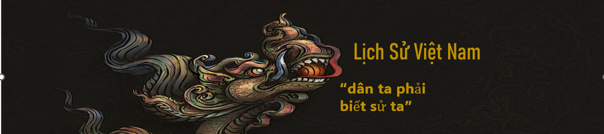

Đây là Là Trang web tạo ra với mục đích hướng đến những người yêu thích môn lịch sử
và muốn tìm hiểu về lịch sử cũng như văn hóa của đất nước Việt Nam
Mọi quốc gia nên học lịch sử vì lịch sử rất quan trọng đối với mỗi người và mỗi quốc gia. Lịch sử và hiện tại là một quá trình liên tục có mối quan hệ biện chứng với nhau, hiện tại phải là sự kế thừa và phát triển của quá khứ. Lịch sử là kho tàng kinh nghiệm quý báu mà con người hiện đại được thừa hưởng và không còn cần phải đi tìm, chứng minh. Ai cũng phải biết mình sinh ra ở đâu và như thế nào, bởi “Con người có tổ tiên/ Như cây có gốc, như suối có nguồn”. Lịch sử cho ta biết về văn hóa dân tộc, bản chất nhân loại để chúng ta ghi nhớ và tự hào về lịch sử. Ngày nay, khi xu thế toàn cầu hóa diễn ra rất mạnh mẽ, các quốc gia xích lại gần nhau hơn. Vì vậy, lịch sử càng quan trọng hơn trong xu thế toàn cầu. Lịch sử có giá trị to lớn trong việc giáo dục thế hệ Việt Nam, đặc biệt là thế hệ trẻ. Trong suốt chiều dài lịch sử, Việt Nam đã biến đổi từ một quốc gia nghèo, nhỏ bé, luôn bị ngoại xâm tàn phá, nhưng đã kiên quyết chống lại mọi thế lực thù địch để phát triển đất nước như ngày nay. Nếu chúng ta không học toán, chúng ta gặp khó khăn trong các phép tính hàng ngày, nhưng nếu chúng ta không biết cha mẹ và tổ tiên của mình là ai, chúng ta không cảm thấy tự hào về truyền thống lịch sử vẻ vang của đất nước. Lịch sử nâng cao tinh thần của con người, giáo dục con người cần cù, siêng năng, sáng tạo, yêu thương, đoàn kết với gia đình, quê hương.